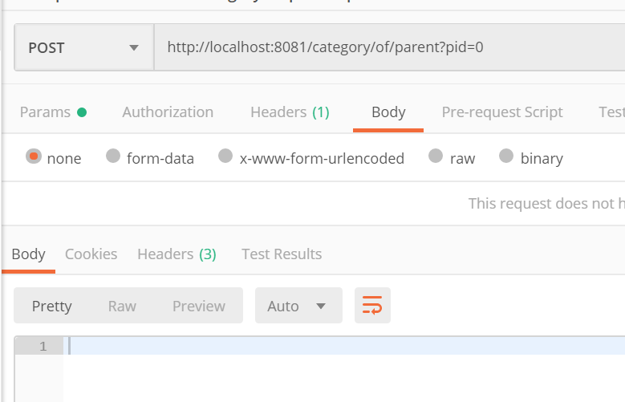
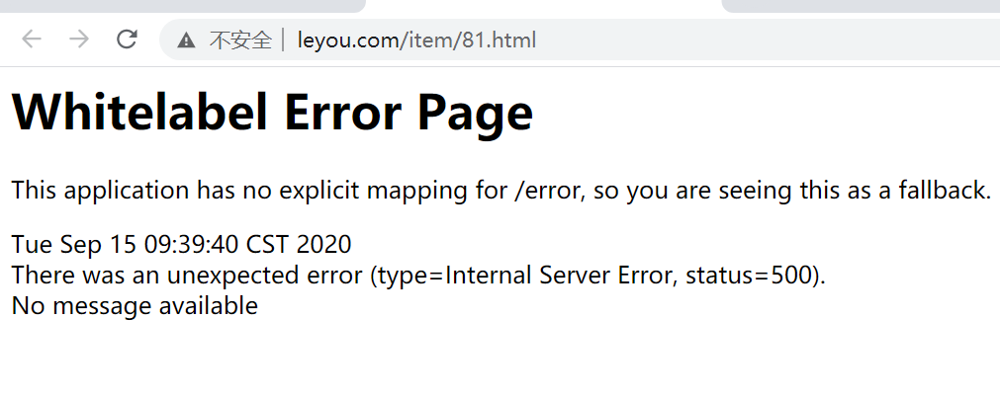

01、课程目标
会使用Feign拦截器
了解购物车功能流程
实现未登录下购物车功能
《微服务之间鉴权的流程》

02、微服务间鉴权：(2)定时获取Token-定时任务
说明：之前我们在网关微服务已经测试通过了生成token的方法，现在我们需要编写定时来获取token。
我们这里用到了SpringTask定时任务功能，接着我们在网关开启SpringTask进行测试。
1）在网关微服务中开启定时任务

2）定时任务测试之固定频率定时任务测试
package com.leyou.gateway.scheduler;
import org.joda.time.DateTime;
import org.springframework.scheduling.annotation.Scheduled;
import org.springframework.stereotype.Component;
/**
* 定时任务类
*/
@Component
public class SchedulingDemo {
/**
* 固定频率（单位：毫秒）
*/
@Scheduled(fixedRate = 5000)
public void rateJob(){
System.out.println("固定频率的任务："+ DateTime.now());
}
}
3）定时任务测试之cron表达式定时任务测试
上面不管是固定频率还是固定延迟，执行规则都比较简单，假如我们有非常复杂的执行要求，就要用到cron表达式了。
cron表达式分七个域，分别为：
年：一般不指定
周：？ * ，- /
月：* ， - /
日：？ * ， - /
时：* ， - /
分：* ， - /
秒：* ， - /
使用cron表达式指定一个，每年，每月，1到6号，每天上午9点，从3分开始，每隔5分钟的第八秒执行一次。
package com.leyou.gateway.scheduler;
import org.joda.time.DateTime;
import org.springframework.scheduling.annotation.Scheduled;
import org.springframework.stereotype.Component;
/**
* 定时任务类
*/
@Component
public class SchedulingDemo {
/**
* 固定频率（单位：毫秒）
*/
/*@Scheduled(fixedRate = 5000)
public void rateJob(){
System.out.println("固定频率的任务："+ DateTime.now());
}*/
/**
* Cron表达式任务（日历任务）
* cron语法： 注意： SpringTask的Cron表达式必须是6个值（不能配置年）
* 秒 分 时 日 月 周 （日 或 周 必须有一个是？号）
*/
@Scheduled(cron = "0/5 * * * * ?")
public void rateJob(){
System.out.println("Cron表达式任务："+ DateTime.now());
}
}
4）SpringBoot中定时任务优化
spring:
task:
scheduling:
pool:
size: 1 #一般有几个定时任务就开启几个线程03、微服务间鉴权：(2)定时获取Token-网关微服务
接下来我们分别在网关微服务和搜索微服务定时获取Token。
首先，在网关微服务完成Token获取。
1） 导入jar包（已完成）
<!--导入feign相关jar包-->
<dependency>
<groupId>org.springframework.cloud</groupId>
<artifactId>spring-cloud-starter-openfeign</artifactId>
</dependency>
<dependency>
<groupId>com.leyou</groupId>
<artifactId>ly-client-auth</artifactId>
<version>1.0-SNAPSHOT</version>
</dependency>2） 在启动类上开启定时任务（已完成）
package com.leyou;
import com.leyou.gateway.config.FilterProperties;
import com.leyou.gateway.config.JwtProperties;
import org.springframework.boot.SpringApplication;
import org.springframework.cloud.client.SpringCloudApplication;
import org.springframework.cloud.openfeign.EnableFeignClients;
import org.springframework.scheduling.annotation.EnableScheduling;
@SpringCloudApplication
@EnableScheduling //开启定时任务
@EnableFeignClients
public class LyGatewayApplication {
public static void main(String[] args) {
SpringApplication.run(LyGatewayApplication.class, args);
}
}3） 提供获取token相关的配置文件
在application.yml添加当前服务的服务名称和服务密钥
ly:
jwt:
pubKeyPath: D:\leyou_projects\bk_project\soft\rsa\rsa-key.pub # 公钥地址
cookie:
cookieName: LY_TOKEN # cookie名称
app:
serviceName: api-gateway
secret: api-gateway4） 修改解析配置文件的配置类
package com.leyou.gateway.config;
import com.leyou.common.auth.utils.RsaUtils;
import lombok.Data;
import org.springframework.boot.context.properties.ConfigurationProperties;
import javax.annotation.PostConstruct;
import java.security.PublicKey;
@Data
@ConfigurationProperties(prefix = "ly.jwt")
public class JwtProperties {
……
private AppPojo app = new AppPojo();
@Data
public class AppPojo{
private String serviceName;
private String secret;
}
……
}5） 编写定时任务获取服务认证的token
package com.leyou.gateway.scheduler;
import com.leyou.client.auth.AuthClient;
import com.leyou.gateway.config.JwtProperties;
import lombok.extern.slf4j.Slf4j;
import org.springframework.beans.factory.annotation.Autowired;
import org.springframework.scheduling.annotation.Scheduled;
import org.springframework.stereotype.Component;
/**
* 定时申请服务token
*/
@Component
@Slf4j
public class AppTokenScheduler {
@Autowired
private AuthClient authClient;
@Autowired
private JwtProperties jwtProps;
//设计一个成员变量用于存储当前服务token
private String appToken;
/**
* token刷新间隔
*/
private static final long TOKEN_REFRESH_INTERVAL = 86400000L; //24小时
/**
* token获取失败后重试的间隔
*/
private static final long TOKEN_RETRY_INTERVAL = 10000L;
@Scheduled(fixedRate = TOKEN_REFRESH_INTERVAL)
public void appTokenGet(){
while(true) {
try {
String appToken = authClient.authorization(
jwtProps.getApp().getServiceName(),
jwtProps.getApp().getSecret());
//给成员变量赋值
this.appToken = appToken;
//如果获取成功，则退出循环
log.info("【申请服务证书】获取成功，"+ jwtProps.getApp().getServiceName()+"服务成功上线！");
break;
} catch (Exception e) {
log.error("【申请服务证书】获取失败：" + e.getMessage() + "，10秒后重试...");
try {
Thread.sleep(TOKEN_RETRY_INTERVAL);
} catch (InterruptedException e1) {
e1.printStackTrace();
}
}
}
}
/**
* 给外面获取appToken
* @return
*/
public String getAppToken() {
return appToken;
}
}
04、微服务间鉴权：(2)定时获取Token-搜索微服务
1） 导入jar包
<dependency>
<groupId>com.leyou</groupId>
<artifactId>ly-client-auth</artifactId>
<version>1.0-SNAPSHOT</version>
</dependency>2） 在启动类上开启定时任务
package com.leyou;
import org.springframework.boot.SpringApplication;
import org.springframework.boot.autoconfigure.SpringBootApplication;
import org.springframework.cloud.client.discovery.EnableDiscoveryClient;
import org.springframework.cloud.openfeign.EnableFeignClients;
import org.springframework.scheduling.annotation.EnableScheduling;
/**
* 搜素微服务
*/
@SpringBootApplication
@EnableDiscoveryClient
@EnableFeignClients
@EnableScheduling
public class LySearchApplication {
public static void main(String[] args) {
SpringApplication.run(LySearchApplication.class,args);
}
}
3） 提供获取token相关的配置文件
ly:
jwt:
pubKeyPath: D:\leyou_projects\bk_project\soft\rsa\rsa-key.pub # 公钥地址
cookie:
cookieName: LY_TOKEN # cookie名称
app:
serviceName: search-service
secret: search-service4） 解析配置文件的配置类
package com.leyou.search.config;
import com.leyou.common.auth.utils.RsaUtils;
import lombok.Data;
import org.springframework.boot.context.properties.ConfigurationProperties;
import org.springframework.stereotype.Component;
import javax.annotation.PostConstruct;
import java.security.PublicKey;
/**
* 读取Jwt相关配置
*/
@Data
@Component
@ConfigurationProperties(prefix = "ly.jwt")
public class JwtProperties {
private String pubKeyPath;//公钥路径
private PublicKey publicKey;//公钥
private CookiePojo cookie = new CookiePojo();
private AppTokenPojo app = new AppTokenPojo();
@Data
public class CookiePojo{
private String cookieName;
}
@Data
public class AppTokenPojo{
private String serviceName;
private String secret;
}
/**
* 读取公钥
*/
@PostConstruct
public void initMethod() throws Exception {
publicKey = RsaUtils.getPublicKey(pubKeyPath);
}
}
5） 编写定时任务获取服务认证的token
package com.leyou.search.scheduled;
import com.leyou.auth.client.AuthClient;
import com.leyou.search.config.JwtProperties;
import lombok.extern.slf4j.Slf4j;
import org.springframework.beans.factory.annotation.Autowired;
import org.springframework.scheduling.annotation.Scheduled;
import org.springframework.stereotype.Component;
/**
* 定时获取Token
*/
@Component
@Slf4j
public class AppTokenScheduled {
/**
* token刷新间隔
*/
private static final long TOKEN_REFRESH_INTERVAL = 86400000L;
/**
* token获取失败后重试的间隔
*/
private static final long TOKEN_RETRY_INTERVAL = 10000L;
@Autowired
private AuthClient authClient;
@Autowired
private JwtProperties jwtProperties;
private String token;//保存成功后token
/**
* 每个24小时获取一次Token，如果获取失败，10s后重试
*/
@Scheduled(fixedRate = TOKEN_REFRESH_INTERVAL)
public void autoAppAuth(){
while(true){
try {
//请求token
String token = authClient.authorization(jwtProperties.getApp().getServiceName(),
jwtProperties.getApp().getSecret());
this.token = token;
log.info("【服务自动获取token】- "+jwtProperties.getApp().getServiceName()+"连接成功");
break;
}catch (Exception e){
try {
log.info("【服务自动获取token】- "+jwtProperties.getApp().getServiceName()+"连接失败，10秒后重试...");
//10秒后重试
Thread.sleep(TOKEN_RETRY_INTERVAL);
} catch (InterruptedException e1) {
e1.printStackTrace();
}
}
}
}
//获取token的方法
public String getToken() {
return token;
}
}
05、微服务间鉴权：(3)请求携带Token-网关微服务
思路：网关里面有很多过滤器，我们可以在网关去请求其他微服务之前，对所有请求加上请求头。
这里，我们直接修改之前编写的认证请求过滤器。
1）添加服务认证常量
public class LyConstants {
.......
/*服务认证请求头*/
public static final String APP_TOKEN_HEADER = "APP_TOKEN_HEADER";
}2） 修改认证过滤器
package com.leyou.gateway.filter;
import com.leyou.common.auth.utils.JwtUtils;
import com.leyou.common.auth.utils.Payload;
import com.leyou.common.auth.utils.UserInfo;
import com.leyou.common.constants.LyConstants;
import com.leyou.common.exception.pojo.ExceptionEnum;
import com.leyou.common.exception.pojo.LyException;
import com.leyou.common.utils.CookieUtils;
import com.leyou.gateway.config.FilterProperties;
import com.leyou.gateway.config.JwtProperties;
import com.leyou.gateway.scheduler.AppTokenScheduler;
import lombok.extern.slf4j.Slf4j;
import org.springframework.beans.factory.annotation.Autowired;
import org.springframework.cloud.gateway.filter.GatewayFilterChain;
import org.springframework.cloud.gateway.filter.GlobalFilter;
import org.springframework.core.Ordered;
import org.springframework.http.HttpStatus;
import org.springframework.http.server.reactive.ServerHttpRequest;
import org.springframework.http.server.reactive.ServerHttpResponse;
import org.springframework.stereotype.Component;
import org.springframework.web.server.ServerWebExchange;
import reactor.core.publisher.Mono;
import java.util.List;
/**
* 授权过滤器
*/
@Component
public class AuthFilter implements GlobalFilter,Ordered{
@Autowired
private JwtProperties jwtProps;
@Autowired
private FilterProperties filterProps;
@Autowired
private AppTokenScheduler appTokenScheduler;
/**
* 过滤的逻辑
* @param exchange
* @param chain
* @return
*/
@Override
public Mono<Void> filter(ServerWebExchange exchange, GatewayFilterChain chain) {
//1. 从请求中获取用户token，如果没有token直接拒绝
ServerHttpRequest request = exchange.getRequest();
ServerHttpResponse response = exchange.getResponse();
//=======在进入网关的请求头中加入服务token============
/**
* header(): 在请求中添加请求头
*/
request.mutate().header(LyConstants.APP_TOKEN_HEADER,appTokenScheduler.getAppToken());
/**
* HttpServletRequest是Oracle提供的，原生的
* ServerHttpRequest是Spring提供的，是对HttpServletRequest的二次封装，提供出新的方法来操作request
*/
//=======加入网关白名单=========
//1.获取当前访问的URL
//request.getURI().toString();
String uri = request.getURI().getPath(); // /api/item/category/of/parent
//2.判断当前访问的URL是否在白名单，如果在，则访问，不在则拒绝
List<String> allowPaths = filterProps.getAllowPaths();
for(String allowPath:allowPaths){
if(uri.contains(allowPath)){
//放行
return chain.filter(exchange);
}
}
//2. 校验用户token是否合法，如果不合法直接拒绝
Payload<UserInfo> payload = null;
try {
/**
* getCookies():获取所有Cookie数据
* getFirst(): 获取第一个指定名称的Cookie
*/
String token = request.getCookies().getFirst(jwtProps.getCookie().getCookieName()).getValue();
payload = JwtUtils.getInfoFromToken(token,jwtProps.getPublicKey(), UserInfo.class);
} catch (Exception e) {
//throw new LyException(ExceptionEnum.UNAUTHORIZED);
//返回401状态码
response.setStatusCode(HttpStatus.UNAUTHORIZED);
//中止请求
return response.setComplete();
}
//放行
return chain.filter(exchange);
}
/**
* 配置过滤器的顺序
* 返回的整数越小，优先级越高
* @return
*/
@Override
public int getOrder() {
return 1;
}
}

3） 测试
在ly-item项目的CategoryController，看看经过网关转发后，能否接收到token
/**
* 分类控制器
*/
@RestController
//@CrossOrigin //跨域注解
public class CategoryController {
@Autowired
private CategoryService categoryService;
/**
* 根据父id查询分类
*/
@GetMapping("/category/of/parent")
public ResponseEntity<List<Category>> findCategoriesById(@RequestParam("pid") Long pid, HttpServletRequest request){
System.out.println("服务token="+request.getHeader(LyConstants.APP_TOKEN_HEADER));
List<Category> categories = categoryService.findCategoriesById(pid);
//return ResponseEntity.status(HttpStatus.OK).body(categories);
return ResponseEntity.ok(categories);
}重启项目后，浏览器直接输入：http://api.leyou.com/api/item/category/of/parent?pid=0
如果看到输入了token信息，代表网关成功携带token啦！

06、微服务间鉴权：(3)请求携带Token-搜索微服务
因为搜索微服务属于普通微服务，是通过Feign来调用另一个微服务的，所以需要编写feign的请求拦截器来携带token到另一个微服务。
1）添加Feign拦截器
在ly-search项目添加AuthFeignInterceptor类，如下：
package com.leyou.search.interceptor;
import com.leyou.common.constants.LyConstants;
import com.leyou.search.scheduler.AppTokenScheduler;
import feign.RequestInterceptor;
import feign.RequestTemplate;
import org.springframework.beans.factory.annotation.Autowired;
import org.springframework.stereotype.Component;
/**
* Feign拦截器，用于把服务token放入Feign请求中
*/
@Component
public class FeignInterceptor implements RequestInterceptor{
@Autowired
private AppTokenScheduler appTokenScheduler;
@Override
public void apply(RequestTemplate requestTemplate) {
//添加请求头
requestTemplate.header(LyConstants.APP_TOKEN_HEADER,appTokenScheduler.getAppToken());
}
}
2）测试
因为搜索功能需要从搜索服务 调用 商品服务，所以随便找个需要调用的方法来测试就好
/**
* 根据分类id集合 查询 分类对象集合
*/
@GetMapping("/category/list")
public ResponseEntity<List<Category>> findCategoriesByIds(@RequestParam("ids") List<Long> ids, HttpServletRequest request){
System.out.println("AppToken: "+request.getHeader(LyConstants.APP_TOKEN_HEADER));
List<Category> categories = categoryService.findCategoriesByIds(ids);
return ResponseEntity.ok(categories);
} 

注意：测试后记得把测试代码删除！！！
07、微服务间鉴权：(4)拦截器校验Token-搜索微服务
思路：如果我们在每个处理器内部，对访问者进行权限校验，就会使得权限校验的代码与业务代码耦合太紧密，springmvc为我们提供了aop思想的拦截器，可以解开此耦合。
下面在搜索微服务添加过滤器
1） 编写拦截器
package com.leyou.search.interceptor;
import com.leyou.common.auth.utils.AppInfo;
import com.leyou.common.auth.utils.JwtUtils;
import com.leyou.common.auth.utils.Payload;
import com.leyou.common.constants.LyConstants;
import com.leyou.search.config.JwtProperties;
import lombok.extern.slf4j.Slf4j;
import org.springframework.beans.factory.annotation.Autowired;
import org.springframework.stereotype.Component;
import org.springframework.web.servlet.HandlerInterceptor;
import javax.servlet.http.HttpServletRequest;
import javax.servlet.http.HttpServletResponse;
import java.util.List;
/**
* 服务token验证拦截器
*/
@Component
@Slf4j
public class AppTokenInterceptor implements HandlerInterceptor{
@Autowired
private JwtProperties jwtProps;
/**
* 拦截请求，进行验证
* @param request
* @param response
* @param handler
* @return
*/
@Override
public boolean preHandle(HttpServletRequest request, HttpServletResponse response, Object handler) {
//1.取出服务token
String appToken = request.getHeader(LyConstants.APP_TOKEN_HEADER);
//2.验证其合法性
Payload<AppInfo> payload = null;
try {
payload = JwtUtils.getInfoFromToken(appToken, jwtProps.getPublicKey(), AppInfo.class);
} catch (Exception e) {
log.warn("【服务鉴权】鉴权失败，"+e.getMessage());
//拒绝访问
return false;
}
//3.判断当前服务是否在合法服务列表中
AppInfo info = payload.getInfo();
List<String> targetList = info.getTargetList();
if(!targetList.contains(jwtProps.getApp().getServiceName())){
//拒绝访问
return false;
}
return true;
}
}
2） 配置拦截器
package com.leyou.search.config;
import com.leyou.search.interceptor.AppTokenInterceptor;
import org.springframework.beans.factory.annotation.Autowired;
import org.springframework.context.annotation.Configuration;
import org.springframework.web.servlet.config.annotation.InterceptorRegistry;
import org.springframework.web.servlet.config.annotation.WebMvcConfigurer;
/**
* MVC环境配置类
*/
@Configuration
public class MvcConfig implements WebMvcConfigurer{
@Autowired
private AppTokenInterceptor appTokenInterceptor;
/**
* 添加拦截器
*/
@Override
public void addInterceptors(InterceptorRegistry registry) {
/**
* excludePathPatterns(): 排除拦截路径
*/
registry.addInterceptor(appTokenInterceptor);
}
}
08、微服务间鉴权：(4)拦截器校验Token-商品微服务
1） 提供当前服务的配置信息
ly:
jwt:
pubKeyPath: D:\leyou_projects\bk_project\soft\rsa\rsa-key.pub # 公钥地址
cookie:
cookieName: LY_TOKEN # cookie名称
app:
serviceName: item-service
secret: item-service2） 提供解析配置文件的配置类
package com.leyou.item.config;
import com.leyou.common.auth.utils.RsaUtils;
import lombok.Data;
import org.springframework.boot.context.properties.ConfigurationProperties;
import org.springframework.stereotype.Component;
import javax.annotation.PostConstruct;
import java.security.PublicKey;
/**
* 读取Jwt相关配置
*/
@Data
@Component
@ConfigurationProperties(prefix = "ly.jwt")
public class JwtProperties {
private String pubKeyPath;//公钥路径
private PublicKey publicKey;//公钥
private CookiePojo cookie = new CookiePojo();
private AppTokenPojo app = new AppTokenPojo();
@Data
public class CookiePojo{
private String cookieName;
}
@Data
public class AppTokenPojo{
private String serviceName;
private String secret;
}
/**
* 读取公钥
*/
@PostConstruct
public void initMethod() throws Exception {
publicKey = RsaUtils.getPublicKey(pubKeyPath);
}
}
3） 编写拦截器
package com.leyou.item.interceptor;
import com.baomidou.mybatisplus.core.toolkit.CollectionUtils;
import com.leyou.common.auth.pojo.AppInfo;
import com.leyou.common.auth.pojo.Payload;
import com.leyou.common.auth.utils.JwtUtils;
import com.leyou.common.constants.LyConstants;
import com.leyou.item.config.JwtProperties;
import lombok.extern.slf4j.Slf4j;
import org.apache.commons.lang3.StringUtils;
import org.springframework.beans.factory.annotation.Autowired;
import org.springframework.stereotype.Component;
import org.springframework.web.servlet.HandlerInterceptor;
import javax.servlet.http.HttpServletRequest;
import javax.servlet.http.HttpServletResponse;
import java.util.List;
/**
* 应用token拦截器
*/
@Component
@Slf4j
public class AppTokenInterceptor implements HandlerInterceptor{
@Autowired
private JwtProperties jwtProperties;
@Override
public boolean preHandle(HttpServletRequest request, HttpServletResponse response, Object handler) {
//1.获取请求的应用token
String token = request.getHeader(LyConstants.APP_TOKEN_HEADER);
//2.如果没有，则阻止访问
if(StringUtils.isEmpty(token)){
return false;
}
//3.取出合法目标服务列表
try{
Payload<AppInfo> payload = JwtUtils.getInfoFromToken(token, jwtProperties.getPublicKey(), AppInfo.class);
AppInfo appInfo = payload.getUserInfo();
List<String> targetList = appInfo.getTargetList();
if(CollectionUtils.isEmpty(targetList) || !targetList.contains(jwtProperties.getApp().getServiceName())){
log.error("【服务鉴权】- 认证失败");
return false;
}
//4.判断当前服务是否在目标服务列表中，如果在，则放行；不在，也是阻止访问
}catch (Exception e){
log.error("【服务鉴权】- 认证失败");
return false;
}
return true;
}
}
4） 配置拦截器
package com.leyou.item.config;
import com.leyou.item.interceptor.AppTokenInterceptor;
import org.springframework.beans.factory.annotation.Autowired;
import org.springframework.context.annotation.Configuration;
import org.springframework.web.servlet.config.annotation.InterceptorRegistry;
import org.springframework.web.servlet.config.annotation.WebMvcConfigurer;
@Configuration
public class MvcConfig implements WebMvcConfigurer {
@Autowired
private AppTokenInterceptor appTokenInterceptor;
@Override
public void addInterceptors(InterceptorRegistry registry) {
registry.addInterceptor(appTokenInterceptor);
}
}09、微服务间鉴权：使用postman测试
1）直接访问搜索微服务
使用postman直接访问搜索微服务的搜索方法

看到返回值为空，代表无法访问
2）直接访问商品微服务
使用postman直接访问商品微服务的方法查询分类方法

看到返回值为空，代表无法访问
3）通过网关访问搜索微服务
使用postman通过网关访问搜索微服务的搜索方法

可以看到结果：

10、购物车：购物车的功能分析
1）需求
需求描述：
- 用户可以在登录状态下将商品添加到购物车
- 用户可以在未登录状态下将商品添加到购物车
- 用户可以使用购物车一起结算下单
- 用户可以查询自己的购物车
- 用户可以在购物车中修改购买商品的数量。
- 用户可以在购物车中删除商品。
- 在购物车中展示商品优惠信息(*)
- 提示购物车商品价格变化(*)
- 提示商品是否下架(*)
在需求描述中，不管用户是否登录，都需要实现加入购物车功能，那么已登录和未登录下，购物车数据应该存放在哪里呢？
未登录购物车
用户如果未登录，将数据保存在服务端存在一些问题：
- 无法确定用户身份，需要借助与客户端存储识别身份
- 服务端数据存储压力增加，而且可能是无效数据
那么我们应该用把数据保存在客户端，这样每个用户保存自己的数据，就不存在身份识别的问题了，而且也解决了服务端数据存储压力问题。
无状态，就意味着，当前购物车没有所有者，如果用户从无状态切换到有状态，那么当前浏览器存储的购物车就属于这个用户了。
这里，无状态购物车我们选择存储在浏览器的本地存储中，购物车数据会被持久化到本地存储中。
已登录购物车
用户登录时，数据保存在哪里呢？
大家首先想到的应该是数据库，不过购物车数据比较特殊，读和写都比较频繁，存储数据库压力会比较大。因此我们可以考虑存入Redis中。
不过大家可能会担心Redis存储空间问题，我们可以效仿淘宝，限制购物车最多只能添加99件商品，或者更少。
最后的分析结果：
用户可以在登录状态下将商品添加到购物车，购物车数据可以存储在
- 放入数据库
- mongodb
- 放入redis（本课程使用这个方案）
用户可以在未登录状态下将商品添加到购物车，购物车数据可以存储在
- 放入localstorage （本课程使用这个方案）
- cookie
- webSQL
2）购物车操作流程图

这幅图主要描述了两个功能：新增商品到购物车、查询购物车。
新增商品：
- 判断是否登录
- 是：则添加商品到后台Redis中
- 否：则添加商品到本地的Localstorage
无论哪种新增，完成后都需要查询购物车列表：
- 判断是否登录
- 否：直接查询localstorage中数据并展示
- 是：已登录，则需要先看本地是否有数据，
- 有：需要提交到后台添加到redis，合并数据，而查询
- 否：直接去后台查询redis，而后返回
11、购物车：商品详情服务授权访问商品服务
1）原因
我们点击某个商品进入详情页的时候发现出错，之前还可以的，为什么现在不行了？

原因是，商品详情的数据需要调用商品服务(ly-item)的数据，需要给商品详情服务授权访问商品服务才可以！
接下来，跟之前一样，在商品详情服务加入相关授权配置和代码即可
2）给商品详情服务加入授权配置
导入依赖
<dependency>
<groupId>com.leyou</groupId>
<artifactId>ly-client-auth</artifactId>
<version>1.0-SNAPSHOT</version>
</dependency>启动类加入定时注解
/**
* 商品详情微服务
*/
@SpringBootApplication
@EnableDiscoveryClient
@EnableFeignClients
@EnableScheduling //开启定时任务
public class LyPageApplication {
public static void main(String[] args) {
SpringApplication.run(LyPageApplication.class,args);
}
}application.yml加入配置
ly:
static:
itemDir: D:\leyou_projects\bk_project\soft\nginx-1.16.0\html\item\ #静态页服务器地址
itemTemplate: item #模板名称
jwt:
pubKeyPath: D:\leyou_projects\bk_project\soft\rsa\rsa-key.pub # 公钥地址
cookie:
cookieName: LY_TOKEN # cookie名称
app:
serviceName: page-service
secret: page-serviceJwtProperties配置类
package com.leyou.page.config;
import com.leyou.common.auth.utils.RsaUtils;
import lombok.Data;
import org.springframework.boot.context.properties.ConfigurationProperties;
import org.springframework.stereotype.Component;
import javax.annotation.PostConstruct;
import java.security.PublicKey;
/**
* 读取Jwt相关配置
*/
@Data
@Component
@ConfigurationProperties(prefix = "ly.jwt")
public class JwtProperties {
private String pubKeyPath;//公钥路径
private PublicKey publicKey;//公钥
private CookiePojo cookie = new CookiePojo();
private AppTokenPojo app = new AppTokenPojo();
@Data
public class CookiePojo{
private String cookieName;
}
@Data
public class AppTokenPojo{
private String serviceName;
private String secret;
}
/**
* 读取公钥
*/
@PostConstruct
public void initMethod() throws Exception {
publicKey = RsaUtils.getPublicKey(pubKeyPath);
}
}
定时任务
package com.leyou.page.scheduled;
import com.leyou.auth.client.AuthClient;
import com.leyou.page.config.JwtProperties;
import lombok.extern.slf4j.Slf4j;
import org.springframework.beans.factory.annotation.Autowired;
import org.springframework.scheduling.annotation.Scheduled;
import org.springframework.stereotype.Component;
/**
* 定时获取Token
*/
//@Component
@Slf4j
public class AppTokenScheduled {
/**
* token刷新间隔
*/
private static final long TOKEN_REFRESH_INTERVAL = 86400000L;
/**
* token获取失败后重试的间隔
*/
private static final long TOKEN_RETRY_INTERVAL = 10000L;
@Autowired
private AuthClient authClient;
@Autowired
private JwtProperties jwtProperties;
private String token;//保存成功后token
/**
* 每个24小时获取一次Token，如果获取失败，10s后重试
*/
@Scheduled(fixedRate = TOKEN_REFRESH_INTERVAL)
public void autoAppAuth(){
while(true){
try {
//请求token
String token = authClient.authorization(jwtProperties.getApp().getServiceName(),
jwtProperties.getApp().getSecret());
this.token = token;
log.info("【服务自动获取token】- "+jwtProperties.getApp().getServiceName()+"连接成功");
break;
}catch (Exception e){
try {
log.info("【服务自动获取token】- "+jwtProperties.getApp().getServiceName()+"连接失败，10秒后重试...");
//10秒后重试
Thread.sleep(TOKEN_RETRY_INTERVAL);
} catch (InterruptedException e1) {
e1.printStackTrace();
}
}
}
}
//获取token的方法
public String getToken() {
return token;
}
}
Feign过滤器加入请求头
package com.leyou.page.feign;
import com.leyou.common.constants.LyConstants;
import com.leyou.page.scheduled.AppTokenScheduled;
import feign.RequestInterceptor;
import feign.RequestTemplate;
import org.springframework.beans.factory.annotation.Autowired;
import org.springframework.stereotype.Component;
//@Component
public class AuthFeignInterceptor implements RequestInterceptor {
@Autowired
private AppTokenScheduled appTokenScheduled;
@Override
public void apply(RequestTemplate template) {
//在feign的请求中添加请求头信息
template.header(LyConstants.APP_TOKEN_HEADER, appTokenScheduled.getToken());
}
}12、未登陆购物车：数据结构分析
1）购物车的数据结构
首先分析一下未登录购物车的数据结构。
我们看下页面展示需要什么数据：

因此每一个购物车信息，都是一个对象，包含：
{
skuId:2131241,
title:"小米6",
image:"",
price:190000,
num:1,
ownSpec:"{"机身颜色":"陶瓷黑尊享版","内存":"6GB","机身存储":"128GB"}"
}另外，购物车中不止一条数据，因此最终会是对象的数组。即：
[
{...},{...},{...}
]2）web本地存储
知道了数据结构，下一个问题，就是如何保存购物车数据。前面我们分析过，可以使用Localstorage来实现。Localstorage是web本地存储的一种，那么，什么是web本地存储呢？
什么是web本地存储？

web本地存储主要有两种方式：
- LocalStorage：localStorage 方法存储的数据没有时间限制。第二天、第二周或下一年之后，数据依然可用。
- SessionStorage：sessionStorage 方法针对一个 session 进行数据存储。当用户关闭浏览器窗口后，数据会被删除。
LocalStorage的用法
语法非常简单：

localStorage.setItem("key","value"); // 存储数据
localStorage.getItem("key"); // 获取数据
localStorage.removeItem("key"); // 删除数据注意：localStorage和SessionStorage都只能保存字符串。
不过，在我们的common.js中，已经对localStorage进行了简单的封装：

示例：

13、未登陆购物车：添加购物车
1）修改商品数量num
添加购物车需要知道购物的数量，所以我们需要获取数量大小。我们在Vue中定义num，保存数量：

然后将num与页面的input框绑定，同时给+和-的按钮绑定事件：

编写方法：

2）添加购物车
点击事件
我们看下商品详情页：

现在点击加入购物车会跳转到购物车成功页面。
不过我们不这么做，我们绑定点击事件，然后实现添加购物车功能。

addCart方法中判断用户的登录状态：
addCart(){
ly.http.get("/auth/verify").then(res=>{
// 已登录发送信息到后台，保存到redis中
}).catch(()=>{
// 未登录保存在浏览器本地的localStorage中
})
}获取数量，添加购物车
<script>
var itemVm = new Vue({
el:"#itemApp",
data:{
ly,
specialSpecJson,
paramsMap,
indexes,
skus,
num:1,//购买商品的数量
},
//计算属性
computed:{
//定义一个selectedSku对象，用于存储当前选择的Sku
selectedSku(){
/**
let curSku = {};
//1）获取当前选择的每个参数下标，转换为0_1_2格式
//Object.values()：取出指定对象的所有制
let curIndexes = Object.values(this.indexes).join("_"); //格式： 0_1_2
//2）遍历所有skus，判断他们的indexes属性是否一致，如果一致，则取出当前Sku对象
this.skus.forEach(sku=>{
if(sku.indexes==curIndexes){
curSku = sku;
}
})
return curSku;
*/
let curIndexes = Object.values(this.indexes).join("_"); //格式： 0_1_2
//find: 该方法是数组的方法，用于在数组中根据条件来查询指定元素，返回符合条件的元素
return this.skus.find(sku=>sku.indexes==curIndexes);
},
//定义一个images属性，用于来存储当前选中的Sku的所有图片
images(){
return this.selectedSku.images.split(",") || [];
},
curOwnSpec(){
}
},
methods:{
//添加数量
increment(){
this.num++;
},
//减少数量
decrement(){
if(this.num>1){
this.num--;
}
},
//添加购物车
addCart(){
//判断当前用户是否登录
ly.http.get('/auth/verify').then(resp=>{
//已经登录
}).catch(e=>{
//未登录
//判断当前商品是否已经存在于购物车列表中
//1.取出当前购物车列表
let carts = ly.store.get('LY_CART') || [];
//2.判断skuId是否相等
let cart = carts.find(cart=>cart.skuId==this.selectedSku.id);
if(cart){
//如果存在，则数量增加
cart.num += this.num;
}else{
//如果不存在，则把当前商品数据添加到购物车列表
carts.push({
"skuId":this.selectedSku.id,
"title":this.selectedSku.title,
"image":this.images[0],
"price":this.selectedSku.price,
"num":this.num,
"ownSpec":this.selectedSku.ownSpec
});
}
//把更新后carts数据设置到localStorage
ly.store.set('LY_CART',carts);
//3.跳转到购物车列表页面
window.location.href="http://www.leyou.com/cart.html";
});
},
},
components:{
lyTop: () => import('/js/pages/top.js')
}
});
</script>结果：

添加完成后，页面会跳转到购物车结算页面：cart.html
14、未登录购物车：查询购物车
1）查询购物车
页面加载时，就应该去查询购物车。
<script type="text/javascript">
var cartVm = new Vue({
el: "#cartApp",
data: {
ly,
carts:[],//存储所有购物车
},
created(){
this.loadCarts();
},
methods:{
//判断用户是否登录方法
verifyUser(){
return ly.http.get('/auth/verify');
},
//查询购物车
loadCarts(){
this.verifyUser().then(resp=>{
//已经登录
}).catch(e=>{
//未登录
//1.取出本地localStorage数据
let carts = ly.store.get('LY_CART') || [];
//2.赋值给data
this.carts = carts;
})
},
},
components: {
shortcut: () => import("/js/pages/shortcut.js")
}
})
</script>刷新页面，查看控制台Vue实例：

2）渲染购物车到页面
接下来，我们在页面中展示carts的数据：
<div class="cart-item-list">
<div class="cart-body">
<div class="cart-list">
<ul class="goods-list yui3-g" v-for="(cart,index) in carts" :key="index">
<li class="yui3-u-1-24">
<input type="checkbox" name="" value="" />
</li>
<li class="yui3-u-11-24">
<div class="good-item">
<div class="item-img"><img :src="cart.image" width="80px" height="80px"/></div>
<div class="item-msg">
<span style="line-height:70px ">
{{cart.title}}
<span v-for="(v,k,i) in JSON.parse(cart.ownSpec)" :key="i">
{{k}}：{{v}}
</span>
</span>
</div>
</div>
</li>
<li class="yui3-u-1-8"><span style="line-height:70px " class="price">{{ly.formatPrice(cart.price)}}</span></li>
<li class="yui3-u-1-8" style="padding-top: 20px">
<a href="javascript:void(0)" class="increment mins">-</a>
<input autocomplete="off" type="text" v-model="cart.num" minnum="1" class="itxt" />
<a href="javascript:void(0)" class="increment plus">+</a>
</li>
<li class="yui3-u-1-8"><span style="line-height:70px " class="sum">{{ly.formatPrice(cart.price*cart.num)}}</span></li>
<li class="yui3-u-1-8">
<a href="#none">删除</a><br />
<a href="#none">移到我的关注</a>
</li>
</ul>
</div>
</div>
</div> 
要注意，价格的展示需要进行格式化，这里使用的是我们在common.js中定义的formatPrice方法
效果：

15、未登录购物车：修改数量
我们给页面的 + 和 -绑定点击事件，修改num 的值：

两个事件：
//添加数量
increment(cart){
//添加数量
cart.num++;
//判断用户是否登录
ly.http.get('/auth/verify').then(resp=>{
//已经登录
}).catch(e=>{
//未登录
//把更新的数量保存到LocalStorage
ly.store.set('LY_CART',this.carts);
})
},
//减少数量
decrement(cart){
if(cart.num<=1){
return;
}
//减少数量
cart.num--;
//判断用户是否登录
ly.http.get('/auth/verify').then(resp=>{
//已经登录
}).catch(e=>{
//未登录
//把更新的数量保存到LocalStorage
ly.store.set('LY_CART',this.carts);
})
}16、未登录购物车：删除商品
给删除按钮绑定事件：

点击事件中删除商品：
//删除商品
delCart(index){
//判断用户是否登录
ly.http.get('/auth/verify').then(resp=>{
//已经登录
}).catch(e=>{
//未登录
//根据下标从数组中删除元素
/**
* splice方法
* 参数一：删除的开始下标位置
* 参数二：删除元素个数
*/
this.carts.splice(index,1);
ly.store.set('LY_CART',this.carts);
})
}17、课程总结
1）微服务鉴权
按照图的4个步骤逐一实现
2）理解购物车的需求
分为已经登录和未登录购物车
3）未登录的购物车
2.1 购物车数据结构设计
2.2 如何操作LocalStorage